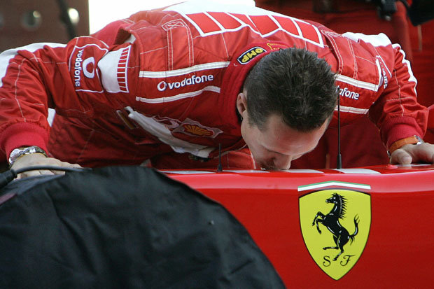
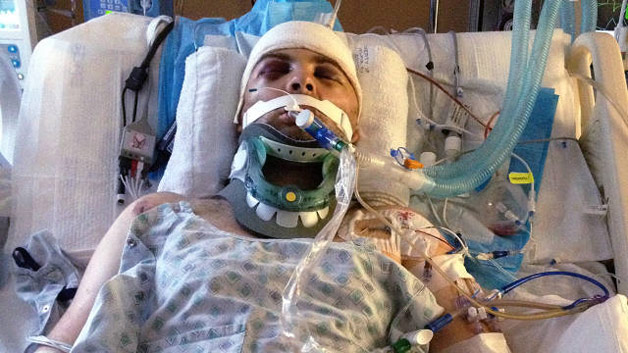

Michael Schumacher born 3 January 1969) is a retired German racing driver. Schumacher is a seven-time Formula One World Champion and is widely regarded as one of the greatest Formula One drivers of all time.He was named Laureus World Sportsman of the Year twice. He holds many of Formula One's driver records, including most championships, race victories, fastest laps, pole positions and most races won in a single season – 13 in 2004 (the last of these records was equalled by fellow German Sebastian Vettel nine years later). In 2002, he became the only driver in Formula One history to finish in the top three in every race of a season and then also broke the record for most consecutive podium finishes. According to the official Formula One website, he is "statistically the greatest driver the sport has ever seen".
After beginning with karting, Schumacher won the German drivers' championships in Formula König and Formula Three before joining Mercedes in the World Sportscar Championship. After one Mercedes-funded race for the Jordan Formula One team, Schumacher signed as a driver for the Benetton Formula One team in 1991. After winning consecutive championships with Benetton in 1994/5, Schumacher moved to Ferrari in 1996 and won another five consecutive drivers' titles with them from 2000 to 2004. Schumacher retired from Formula One driving in 2006 staying with Ferrari as an advisor.
Schumacher agreed to return for Ferrari part-way through 2009, as cover for the badly injured Felipe Massa, but was prevented by a neck injury. Schumacher returned to Formula One on a permanent basis from 2010 with the Mercedes team before retiring for a second time at the conclusion of the 2012 season. His career was not without controversy, including being twice involved in collisions in the final race of a season that determined the outcome of the World Championship, with Damon Hill in 1994 in Adelaide, and with Jacques Villeneuve in 1997 in Jerez. Off the track Schumacher is an ambassador for UNESCO and a spokesman for driver safety. He has been involved in numerous humanitarian efforts throughout his life and donated tens of millions of dollars to charity. Schumacher and his younger brother, Ralf, are the only brothers to win races in Formula One, and they were the first brothers to finish 1st and 2nd in the same race, a feat they repeated in four subsequent races.
In 1996, Schumacher joined Ferrari, a team that had last won the Drivers' Championship in 1979 and the Constructors' Championship in 1983, for a salary of $60 million over 2 years. He left Benetton a year before his contract with them expired; he later cited the team's damaging actions in 1994 as his reason for opting out of his deal.
A year later Benetton employees Rory Byrne (designer) and Ross Brawn (Technical Director) joined Ferrari.

Ferrari had previously come close to the championship in 1982 and 1990. The team had suffered a disastrous downturn in the early 1990s, partially as its famous V12 engine was no longer competitive against the smaller, lighter and more fuel efficient V10s of its competitors. Various drivers, notably Alain Prost, had given the vehicles labels such as "truck", "pig", and "accident waiting to happen". Furthermore, the poor performance of the Ferrari pit crews was considered a running joke. At the end of 1995, though the team had improved into a solid competitor, it was still considered inferior to front-running teams such as Benetton and Williams. Schumacher declared the Ferrari 412T good enough to win the Championship.
Schumacher, Ross Brawn, Rory Byrne, and Jean Todt (hired in 1993), have been credited as turning this once struggling team into the most successful team in Formula One history. Three-time World Champion Jackie Stewart believes the transformation of the Ferrari team was Schumacher's greatest feat. Eddie Irvine also joined the team, moving from Jordan.
Going into the 1994 Australian Grand Prix, the final race of the 1994 season, Schumacher led Damon Hill by a single point in the Drivers' Championship. Schumacher led the race from the beginning, but on lap 35 he went off track and hit the wall with his right side wheels, returning to the track at reduced speed, and with car damage, but still leading the race. At the next corner Hill attempted to pass on the inside, but Schumacher turned in sharply and they collided. Both cars were eliminated from the race and, as neither driver scored, Schumacher took the title. The race stewards judged it a racing accident and took no action against either driver, but public opinion is divided over the incident, and Schumacher was vilified in the British media.
Historically, team orders have always been an accepted part of Formula One. However, in the final metres of the 2002 Austrian Grand Prix, Schumacher's teammate, Rubens Barrichello, slowed his car under orders from Ferrari to allow Schumacher to pass and win the race. Although the switching of positions did not break any actual sporting or technical regulation, it angered fans and it was claimed that the team's actions showed a lack of sportsmanship and respect to the spectators. Many argued that Schumacher did not need to be "given" wins in only the 6th race of the season, particularly given that he had already won four of the previous five grands prix, and that Barrichello had dominated the race weekend up to that point. At the podium ceremony, Schumacher pushed Barrichello onto the top step, and for this disturbance, the Ferrari team incurred a US$1 million fine. Later in the season at the end of the 2002 United States Grand Prix, Schumacher slowed down within sight of the finishing line, allowing Barrichello to win by 0.011 seconds, the 2nd closest margin in F1 history. Schumacher's explanation varied between it being him "returning the favour" for Austria (now that Schumacher's title was secure), or trying to engineer a dead-heat (a feat derided as near-impossible in a sport where timings are taken to within a thousandth of a second). The FIA subsequently banned "team orders which interfere with the race result", but the ban was lifted for the 2011 season because the ruling was difficult to enforce.
During his spell in Sauber, in the 1991 Sportscar World Championship, Schumacher was involved in a serious incident with Derek Warwick in that year's 430 km of Nürburgring. While trying to set his flying lap in qualifying, Schumacher encountered Warwick's Jaguar on a slow lap resulting in lost time for Schumacher. As retaliation for being in his way, Schumacher swerved the Sauber into Warwick's car, hitting the Jaguar's nose and front wheel. Enraged by the German's attitude, Warwick drove to the pits and chased a fleeing Schumacher on foot through the Sauber pits. He eventually caught up with Schumacher, and it took intervention from Jochen Mass to prevent Warwick physically assaulting Schumacher.
On 29 December 2013, Schumacher was skiing with his 14-year-old son Mick descending the Combe de Saulire below the Dent de Burgin above Méribel in the French Alps. While crossing an unsecured off-piste area between Piste Chamois and Piste Mauduit he fell and hit his head on a rock, sustaining a head injury despite wearing a ski helmet. According to his physicians, Schumacher would most likely have died had he not been wearing a helmet. Schumacher was put into a medically induced coma because of having suffered a traumatic brain injury; his doctors reported on 7 March 2014, that his condition was stable.On 4 April 2014, Schumacher's agent reported that he was showing "moments of consciousness" as he was gradually withdrawn from the medically induced coma, adding to reports by relatives of "small encouraging signs" over the preceding month.

In mid-June he was moved from intensive care into a rehabilitation ward. By 16 June 2014, Schumacher had regained consciousness and left Grenoble Hospital for further rehabilitation at the University Hospital (CHUV) in Lausanne, Switzerland. On 9 September 2014, Schumacher left CHUV and was brought back to his home for further rehabilitation. In November 2014, it was reported that Schumacher was "paralysed and in a wheelchair"; he "cannot speak and has memory problems". In a video interview released on May 2015, Schumacher's manager Sabine Kehm said that his condition is slowly improving "considering the severeness of the injury he had".